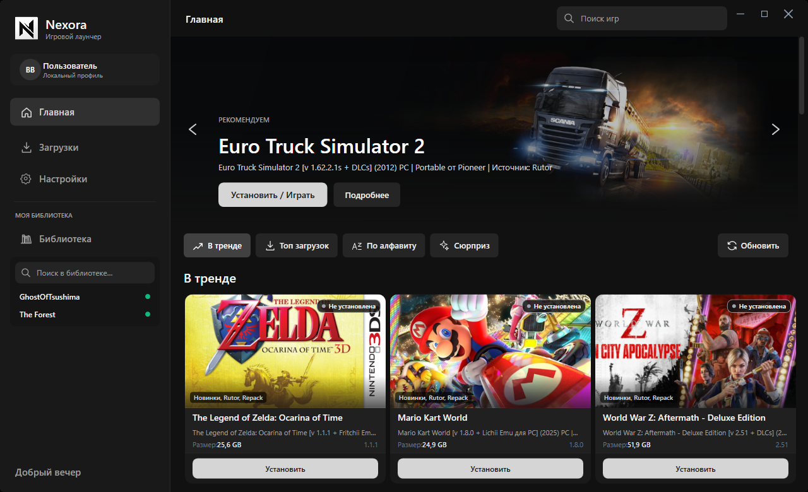

Поиск по источникам
Встроенный каталог Rutor и свои JSON-источники: подборки, фильтры и поиск в реальном времени.
Игровой лаунчер для Windows
Nexora ищет игры в подключённых источниках, качает их через BitTorrent или HTTP с докачкой и запускает из твоей библиотеки.

Возможности
От поиска до кнопки «Играть» — без ручной распаковки архивов и проверки хешей.
Встроенный каталог Rutor и свои JSON-источники: подборки, фильтры и поиск в реальном времени.
Движок rqbit на Rust: magnet-ссылки, .torrent, fast resume и лимиты скорости.
Range-запросы, временная папка staging и атомарная установка после проверки.
Хеши финальных файлов сверяются после распаковки. Не совпало — установка отменяется.
Статусы установки и обновлений, запуск игры, проверка файлов, папка и удаление.
Папка библиотеки, лимиты скорости, очистка кэша, язык интерфейса и цвет акцента.
Интерфейс
Каталог, библиотека, карточка игры и настройки собраны в одном тёмном интерфейсе.
Как это работает
Nexora ведёт от поиска до запуска, сохраняя прогресс загрузки между сессиями.
Введи название в поиск или открой подборку в каталоге.
Nexora выберет источник и покажет скорость, прогресс и остаток.
Проверь целостность файлов и открой игру из библиотеки.
Загрузка
Установщик для Windows x64. .NET ставить отдельно не нужно.
Текущая сборка
1.0.68Windows · x64
Nexora-Setup-1.0.68-win-x64.exeУстановщик не подписан цифровым сертификатом, поэтому Windows может показать предупреждение об издателе.
Вопросы
Коротко о требованиях, папках и обновлениях.
Нет. Nexora собирается как self-contained приложение и несёт нужные компоненты с собой.
По умолчанию в %USERPROFILE%\Games\Nexora. Папку можно выбрать при установке и изменить в настройках.
Профиль и логи лежат в %APPDATA%\Nexora. Папку можно открыть прямо из настроек.
Установщик не подписан сертификатом. Скачивай его только из официального репозитория Nexora.
Скачай новый установщик и запусти его. Автоматического канала обновлений у лаунчера нет.